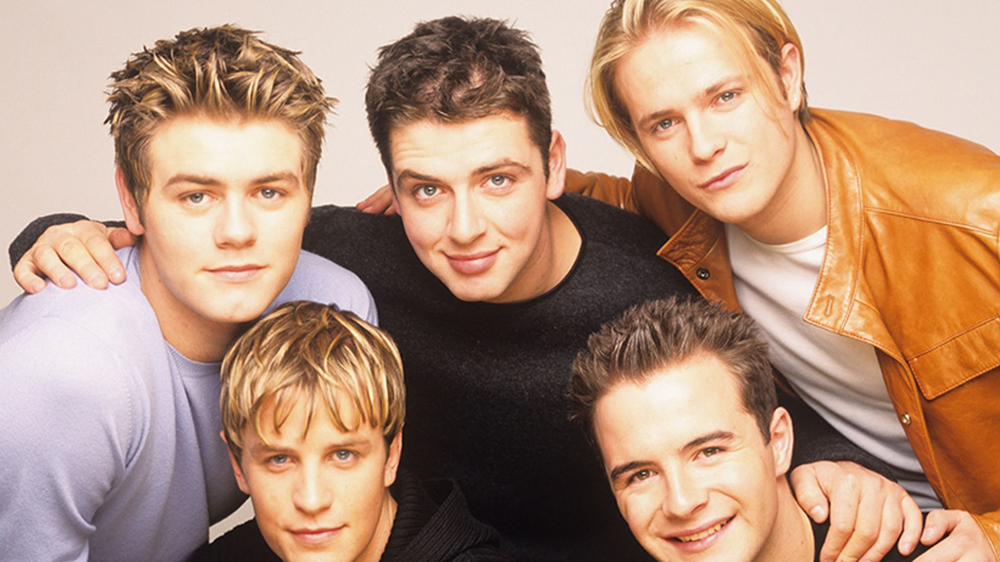

Westlife are an Irish pop group formed in Dublin in 1998. The group consists of members Shane Filan, Mark Feehily, Kian Egan, and Nicky Byrne. Brian McFadden was a member before leaving in March 2004. The group disbanded in 2012 and later reunited in 2018. In Ireland, the group has 11 number-one albums, 16 number-one singles, and 34 Top 50 singles. They have sold over 55 million records and are holders of four Guinness World Records.[1][2][3][4] Westlife has received numerous accolades including one World Music Award, two Brit Awards, four MTV Awards, and four Record of the Year Awards. The group has released twelve studio albums: four as a five-piece and eight as a four-piece. They rose to fame with their debut international self-titled studio album, Westlife (1999). It was followed by Coast to Coast (2000), World of Our Own (2001), and Turnaround (2003). Following the departure of McFadden, the group released the cover albums ...Allow Us to Be Frank (2004) and The Love Album (2006), the albums Face to Face (2005), Back Home (2007), Where We Are (2009), and Gravity (2010), followed by a six-year split. After reforming in 2018, the quartet released the studio albums Spectrum (2019) and Wild Dreams (2021).
Kian Egan, Mark Feehily, and Shane Filan, all schoolmates at Summerhill College in Sligo, Ireland, participated in a school production of Grease with fellow Sligo men Derrick Lacey, Graham Keighron, and Michael Garrett. The sextet formed a pop vocal group called Six as One in 1997, later renamed IOYOU. The group, managed by choreographer Mary McDonagh and two other informal managers, released a single titled "Together Girl Forever" under Sound Records.[5] McDonagh first encountered Egan as a six-year-old student at her weekly dance classes and came to know Filan and Feehily in their early teens as they starred in shows such as Oliver! and Godspell for Sligo Fun Company.